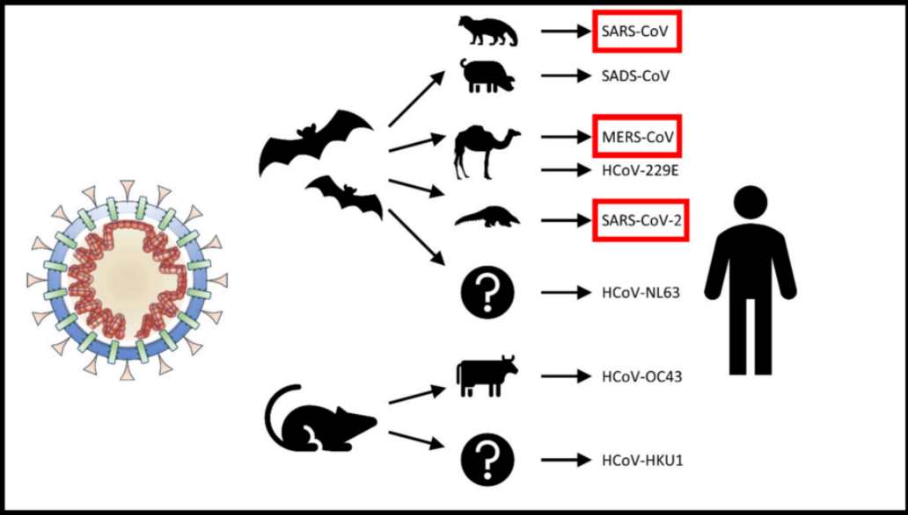

COVID-19 é a doença infecciosa causada pelo último coronavírus descoberto em dezembro de 2019. Este novo vírus, chamado SARS-Cov-2, e doença eram desconhecidos antes do início do surto em Wuhan, na China.Os coronavírus são uma grande família de vírus que podem causar doenças em animais e humanos. Em humanos, os coronavírus provocam infecções respiratórias, que variam do resfriado comum a graves doenças, como a Síndrome Respiratória do Oriente Médio (MERS) e a Síndrome Respiratória Aguda Grave (SARS). O coronavírus descoberto, recentemente, causa a doença COVID-19.
O novo coronavírus é chamado cientificamente de SARS-CoV-2. Essa palavra difícil contém informações importantes, como:
SARS é uma abreviação de uma síndrome chamada de Severe Acute Respiratory Syndrome, que é traduzida como Síndrome Respiratória Aguda Grave. Essa é a forma grave de muitas doenças respiratórias e o principal sintoma é a dificuldade de respirar;
CoV é uma abreviação de coronavírus, a família de vírus que ele pertence;
por fim, o número 2, porque ele é muito parecido com uma outra espécie de coronavírus que quase virou uma pandemia em 2002, o SARS-CoV.
Quando um novo vírus passa a infectar humanos e vem dos animais, ele é chamado de zoonótico. Zoo é animal em grego antigo. Uma doença causada por esse tipo de vírus é chamada de zoonose. Outros tipos de zoonoses são a Raiva, a Dengue e a Leishmaniose. O controle de zoonoses é muito importante! Então, quando um agente de controle das zoonoses bater em sua porta, dê todas as informações que ele precisa. O que se sabe até o momento é que o novo coronavírus é muito parecido com outros vírus encontrados em morcegos, o que pode indicar que talvez exista um parentesco entre eles. Essa análise é feita por meio de técnicas de sequenciamento genético, uma técnica que desvenda o que está escrito no manual do vírus.
O surto é: o aumento repentino do número de casos de uma doença em uma região específica. Para ser considerado surto, o aumento de casos deve ser maior do que o esperado pelas autoridades. Em algumas cidades (como Itajaí-SC), a dengue é tratada como surto (e não como epidemia), pois acontece em regiões específicas (um bairro, por exemplo).
A pademia é: Em uma escala de gravidade, a pandemia é o pior dos cenários. Ela acontece quando uma epidemia se espalha por diversas regiões do planeta. Em 2009, a gripe A (ou gripe suína) passou de epidemia para pandemia quando a OMS começou a registrar casos nos seis continentes do mundo. A aids, apesar de estar diminuindo no mundo, também é considerada uma pandemia.
A epidemia é: A epidemia é quando um surto acontece em diversas regiões. Uma epidemia a nível municipal acontece quando diversos bairros apresentam uma doença, a epidemia a nível estadual acontece quando diversas cidades têm casos e a epidemia nacional acontece quando há casos em diversas regiões do país. Exemplo: no dia 24 de fevereiro, vinte cidades haviam decretado epidemia de dengue.
A endemia é: Uma doença é classificada como endêmica (típica) de uma região quando acontece com muita frequência no local. As doenças endêmicas podem ser sazonais. A febre amarela, por exemplo, é considerada uma doença endêmica da região Norte do Brasil.A endemia não está relacionada a uma questão quantitativa.